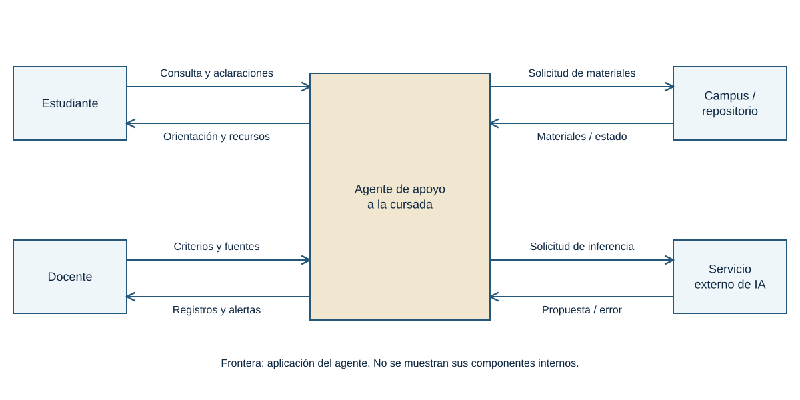
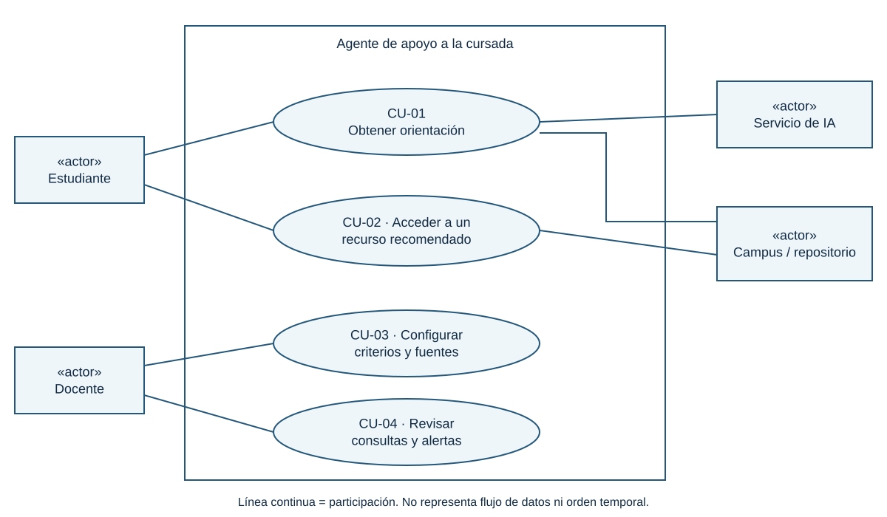
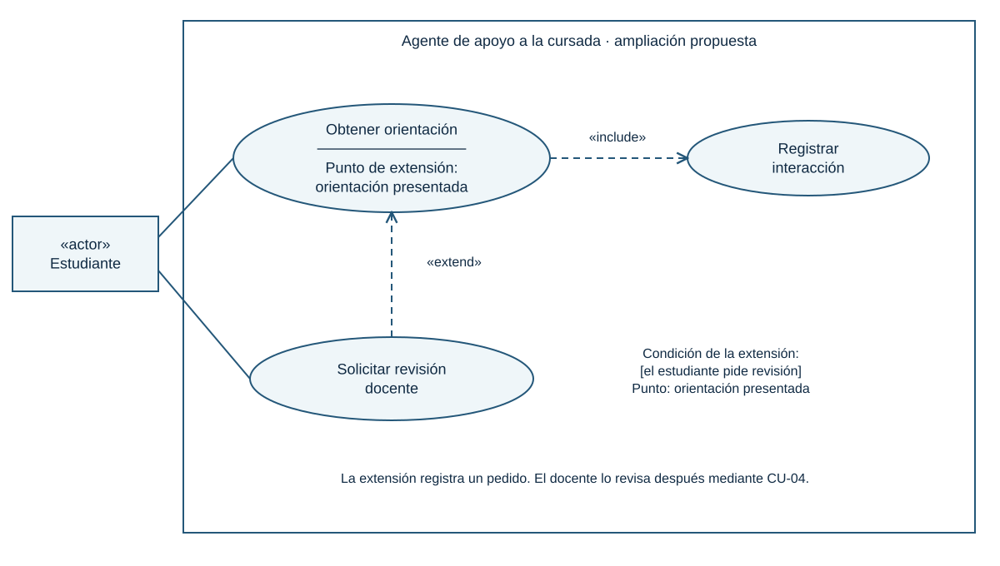
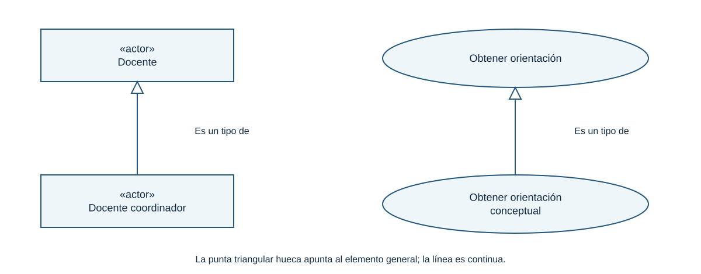

01 · Empezamos por el propósito
Dibujar es tomar decisiones
Un diagrama sirve para que otra persona comprenda nuestro proyecto y pueda discutirlo. Cada elemento debe responder a una decisión: qué problema abordamos, dónde termina nuestra responsabilidad, quién participa y qué resultado esperamos.
Al finalizar vas a poder construir y explicar un diagrama de contexto, un diagrama de casos de uso UML y la descripción de un caso con alternativas. Después vas a contrastarlos con lo que tu prototipo realmente hace.
| Momento | Trabajo | Tiempo orientativo |
|---|---|---|
| Apertura | Recuperar finalidad, frontera, entradas y salidas. | 15 min |
| Video y problema | Ver el video o una selección y formular las dos preguntas del modelado. | 10 min |
| Contexto | Construir el ejemplo con entidades y flujos. | 25 min |
| Casos de uso | Construir la vista inicial y leer su especificación. | 30 min |
| Taller | Aplicar ambos modelos al proyecto del grupo. | 35 min |
| Puesta en común | Comparar, detectar contradicciones y corregir. | 20 min |
| Cierre | Explicar tres decisiones y una duda pendiente. | 10 min |
La profundización sobre relaciones, variantes y herramientas queda disponible para volver a consultar. El tiempo del video se ajusta a su reproducción; esta distribución no afirma una duración del archivo.
02 · Mirar con una pregunta
Video: Modelos de Sistemas y UML
Abrir el video en Google Drive. Si el reproductor solicita acceso, usá la cuenta con la que accedés a los materiales de la cursada.
Antes de verlo
Escribí una frase: «Nuestro agente ayuda a ___ a lograr ___». Si la respuesta es solamente «usar IA», todavía falta definir el problema.
Durante y después
- Anotá una idea sobre qué muestra un modelo y qué deja fuera.
- Buscá ejemplos que te permitan distinguir un participante, un intercambio y una función.
- Volvé al agente: ¿qué debería verse en su contexto y qué debería verse en sus casos de uso?
- Compará tus respuestas con las secciones siguientes y registrá una pregunta para la puesta en común.
El video es el archivo provisto en la carpeta de la clase. Esta guía ofrece un desarrollo escrito autónomo; las preguntas son una propuesta de observación, no una transcripción ni una descripción por minutos del video.
03 · Nuestro ejemplo de principio a fin
Un agente que acompaña la cursada
Un estudiante consulta cómo resolver una actividad o cómo entender un concepto. El agente ofrece orientación basada en materiales autorizados, recomienda recursos, consulta el campus cuando corresponde y utiliza un servicio externo de IA. El docente configura criterios y fuentes y revisa consultas, alertas y síntesis.
Finalidad: ayudar a comprender y avanzar en la cursada, con fuentes identificables y límites explícitos.
Este es un sistema propuesto para analizar. No suponemos que todas sus conexiones estén implementadas. En particular, consultar automáticamente el campus o conservar un registro accesible al docente son capacidades que habrá que verificar en el prototipo.
Primera decisión: la frontera
Dentro del agente
La interfaz propia, la coordinación de consultas, la aplicación de criterios, la preparación de orientaciones y la gestión interna de registros.
Fuera del agente
Estudiante, Docente, Campus/repositorio institucional y Servicio externo de IA. Interactúan con la aplicación, pero no forman parte del sistema que estamos delimitando.
Fuera del alcance funcional: asignar calificaciones oficiales, reemplazar al docente, modificar una consigna institucional o garantizar que una respuesta del modelo sea correcta sin comprobación.
Lo que recuperamos del enfoque sistémico
- Sistema abierto: necesita consultas, materiales y criterios del entorno.
- Estructura y organización: vincula componentes y define reglas; por ejemplo, utilizar fuentes autorizadas y reconocer información insuficiente.
- Sinergia: la orientación surge de coordinar fuentes, reglas, generación y revisión.
- Control y retroalimentación: el docente examina una alerta, decide una corrección y comprueba su efecto. Almacenar una alerta, por sí solo, no completa el control.
- Recursividad: podemos estudiar el agente como parte de un sistema institucional y, en otro nivel, estudiar un subsistema interno. Cada nivel necesita su propia frontera.
04 · La vista de los intercambios
Construir el diagrama de contexto
El diagrama de contexto representa el sistema como una unidad y muestra las entidades externas con las que intercambia información. En esta clase usamos una convención de contexto de flujos de datos: sistema central, entidades externas y flechas rotuladas. No es un tipo de diagrama UML estándar.
| Elemento | Cómo lo representamos | Qué significa |
|---|---|---|
| Sistema | Un bloque central con nombre. | Todo lo que asumimos dentro de la frontera, sin descomponerlo. |
| Entidad externa | Un rectángulo fuera del bloque. | Persona en un rol, organización o sistema que envía o recibe información. |
| Flujo | Flecha con nombre. | Información que va desde el origen hacia el destino. |
Paso 1. Escribí el nombre y la finalidad
En el centro escribimos Agente de apoyo a la cursada. «IA» sería demasiado amplio. Al costado, fuera del dibujo, anotamos la finalidad del apartado anterior.
Paso 2. Declará qué queda dentro y fuera
Usá la frontera ya acordada. No agregues una base de datos, un generador y un buscador dentro del bloque: eso empezaría a mostrar la estructura interna. El contexto debe permitir comprender el sistema sin conocer su implementación.
Paso 3. Encontrá entidades por sus intercambios
Preguntá: ¿quién entrega información?, ¿quién recibe un resultado?, ¿a qué otro sistema consultamos? Así aparecen los cuatro participantes. Una persona interesada que no intercambia información directamente puede figurar en un análisis de interesados, sin forzar su presencia en este contexto.
Paso 4. Completá la tabla antes de dibujar flechas
| Entidad | Entidad → Agente: entrada | Agente → Entidad: salida |
|---|---|---|
| Estudiante | Consulta, consigna y aclaraciones. | Orientación, pedido de aclaración y recursos recomendados. |
| Docente | Criterios, fuentes autorizadas y restricciones. | Registros, alertas y síntesis de consultas. |
| Campus/repositorio | Materiales, referencias o estado de disponibilidad. | Búsqueda o solicitud de material. |
| Servicio externo de IA | Respuesta del modelo o error del servicio. | Solicitud de inferencia con la información necesaria. |
En la fila del campus, la búsqueda es una salida del agente aunque busque obtener información. La respuesta del campus es una entrada. La dirección describe quién envía el dato, no quién se beneficia.
Paso 5. Dibujá y rotulá cada flujo
Colocá las entidades alrededor y conectalas al bloque central. Usá nombres de información: «Consulta», «Criterios», «Materiales». Evitá «Usa», «Interactúa» o «Procesar», porque no permiten identificar qué cruza la frontera. Dos flechas separadas aclaran la solicitud y la respuesta.

Paso 6. Leé el dibujo como una conversación de información
«El estudiante envía una consulta; el agente devuelve orientación». «El agente solicita materiales al campus; el campus devuelve materiales». «El docente aporta criterios y recibe alertas». Cada frase debe poder señalar una flecha con origen y destino inequívocos.
Paso 7. Probá un caso normal y uno problemático
Normal: llega una consulta completa, se obtiene material y el agente entrega orientación. Problemático: el repositorio no dispone del material y el agente comunica la limitación. Revisá si tus flujos permiten representar ambos intercambios; el orden y las decisiones se explicarán en otro modelo.
05 · Variantes y decisiones de contexto
Qué cambia cuando cambia la frontera
No existe un único dibujo correcto para todos los alcances. Sí debe existir coherencia entre la frontera escrita y el dibujo. Estas variantes no son funciones confirmadas del agente: sirven para decidir cómo representar tu proyecto.
| Situación | Decisión y representación |
|---|---|
| El registro es una base interna | Queda oculto dentro del agente. No lo dibujes como entidad externa solo por ser una base de datos. |
| El registro se guarda en una plataforma institucional independiente | La plataforma es externa: agregá «Registro de interacción» hacia ella y «Confirmación/error» hacia el agente, si esos intercambios existen. |
| El modelo de IA se ejecuta como componente propio del sistema | Desaparece el proveedor externo de esa vista. La inferencia pasa a ser un comportamiento interno. Alojamiento local y responsabilidad interna no son sinónimos: justificá ambos. |
| El docente carga documentos manualmente | Los documentos llegan desde Docente. Si no hay comunicación agente–campus, eliminá esa entidad y sus flechas: no inventes una integración. |
| El estudiante abre un enlace al campus por fuera del agente | Si el agente solo entrega un enlace ya cargado y no consulta el campus, ese clic no demuestra un intercambio entre ambos sistemas. Definí si modelás redirección, consulta integrada o simple recomendación. |
| El alcance es todo el servicio institucional de acompañamiento | El agente y ciertos roles docentes podrían quedar dentro. Redefiní entidades externas y resultados para ese sistema más amplio; no mezcles esta vista con la frontera del software. |
| Se incorpora un proveedor de identidad | Mostralo si el agente intercambia solicitudes y resultados de autenticación con él. No agregues «Internet» como sustituto de ese servicio concreto. |
| Solo hay entrada o solo hay salida | Es válido si refleja el alcance. Una fuente puede enviar novedades sin recibir una respuesta de aplicación. No inventes una flecha para hacer el dibujo simétrico. |
| Hay distintas sedes o muchos estudiantes | Un rectángulo puede representar el rol común. Separá entidades cuando sus intercambios o responsabilidades sean diferentes, no por la cantidad de personas. |
| Un evento externo dispara una acción | Un planificador externo puede enviar una solicitud de síntesis. Si el reloj o programador pertenece al agente, no lo conviertas en entidad externa. «Tiempo» no es automáticamente un actor. |
Información, medio y restricciones
«Consulta» es información; «HTTPS» es una tecnología de transporte. En este nivel priorizamos qué se intercambia. Si una restricción importa —por ejemplo, solo lectura del campus— agregala como nota. Una ley, el presupuesto o la conectividad pueden condicionar el sistema sin ser entidades que envían mensajes: se documentan como restricciones, salvo que exista una interacción concreta con un organismo o servicio.
Flechas que conviene evitar
- Entre dos entidades externas: pueden existir en la realidad, pero no describen un intercambio con el sistema recortado. Para nuestro contexto se omiten; un mapa del entorno más amplio puede mostrarlas con otra leyenda.
- Del sistema hacia sí mismo: corresponde a comportamiento interno, no a intercambio con el contexto.
- Sin rótulo o con «datos»: no permite revisar la necesidad. Precisá «Consulta y consigna», por ejemplo.
- Una doble flecha con un único rótulo ambiguo: separá «Solicitud de material» y «Material autorizado».
Contexto, DFD y C4: nombres cercanos, propósitos distintos
En un diagrama de flujo de datos (DFD), el contexto suele mostrar un único proceso que representa al sistema completo. Al descomponerlo aparecen procesos internos y almacenes: ya es otro nivel. Algunas bibliografías llaman al contexto «nivel 0» y otras reservan ese nombre para la primera descomposición. Declará la convención y conservá los intercambios externos al pasar de nivel.
Un contexto C4, orientado a arquitectura de software, muestra personas, sistemas y relaciones generales. Sus relaciones pueden describir uso o dependencia, sin desglosar cada flujo de datos. Un mapa sistémico también puede representar materia o energía. Son vistas posibles, pero esta actividad usa información con dirección y rótulo. No mezcles convenciones sin una leyenda.
Si analizás un subsistema interno, elementos internos del sistema mayor pueden volverse externos a ese subsistema. Poné otro título y otra frontera: no reemplaces silenciosamente un nivel por otro.
06 · La vista de los objetivos
Construir casos de uso UML
UML es un lenguaje de modelado. Sus diagramas ofrecen distintas vistas: casos de uso para objetivos y participación, actividades para flujos de trabajo, secuencia para mensajes en el tiempo y clases para estructura. UML no impone una metodología de desarrollo ni una herramienta.
Un caso de uso describe comportamiento que ofrece un resultado observable de valor a un actor u otro interesado. Su dibujo es una elipse; su significado completo requiere una descripción. Un caso admite muchas ejecuciones concretas o escenarios.
| Elemento | Notación | Ejemplo |
|---|---|---|
| Actor | Figura humana esquemática o rectángulo con «actor». | Estudiante; Servicio externo de IA. |
| Sujeto o sistema | Rectángulo con nombre, con los casos dentro. | Agente de apoyo a la cursada. |
| Caso de uso | Elipse con verbo y complemento. | Obtener orientación. |
| Asociación | Línea continua entre actor y caso. | Estudiante — Obtener orientación. |
Paso 1. Conservá la frontera
Usá exactamente el agente del contexto. Dibujá el rectángulo que lo representa. El docente está fuera aunque forme parte de la institución: la frontera es la de la aplicación.
Paso 2. Identificá roles, no nombres propios
«Estudiante» es un rol; «Ana» es una persona. Una persona puede cumplir varios roles y un rol puede ser desempeñado por muchas personas. Un actor también puede ser otro sistema. «Campus» y «Servicio de IA» no necesitan un objetivo humano propio para participar.
Distinguimos, para analizar, actor principal —persigue el objetivo— y actor de apoyo —provee un servicio o colabora—. No son símbolos UML diferentes. La ubicación a izquierda o derecha ayuda a leer, pero no crea esa clasificación. Un actor no tiene por qué iniciar todas las interacciones en las que participa.
Paso 3. Preguntá qué quiere lograr cada actor
| Actor principal | Necesidad | Caso propuesto |
|---|---|---|
| Estudiante | Comprender una duda de la cursada. | CU-01 · Obtener orientación. |
| Estudiante | Consultar el material sugerido. | CU-02 · Acceder a un recurso recomendado. |
| Docente | Definir cómo y con qué materiales orienta el agente. | CU-03 · Configurar criterios y fuentes. |
| Docente | Identificar dificultades y situaciones que requieren intervención. | CU-04 · Revisar consultas y alertas. |
El segundo caso supone que la aplicación ofrece una función de acceso al recurso y participa en su recuperación. Si solo escribe un enlace en la respuesta, ese comportamiento puede quedar como un paso del primer caso. No es obligatorio separar cada recomendación en una elipse.
Paso 4. Separá objetivo, dato y paso técnico
- «Consulta» nombra un dato. Reformulá el objetivo como «Obtener orientación».
- «Enviar consulta» y «Recibir respuesta» pueden ser el inicio y el resultado de ese mismo caso; no necesitan dos elipses.
- «Hacer clic en Enviar» depende de la interfaz.
- «Llamar a la API» es un paso técnico. En la vista de objetivos no necesita convertirse en caso.
- «Gestionar todo» es demasiado amplio: precisá resultados que puedan comprobarse.
Paso 5. Asociá a quienes participan
Conectá Estudiante con CU-01 y CU-02, Docente con CU-03 y CU-04, Servicio de IA con CU-01 y Campus con CU-01 y CU-02. En CU-01 el campus interviene cuando se requieren materiales. Una asociación no exige que el actor participe en todas las ejecuciones.

Paso 6. Comprobá que cada caso tenga un resultado
Para CU-03, el resultado es una configuración válida guardada o un rechazo explicado. Para CU-04, una selección de consultas y alertas queda disponible para revisión. «Abrir la pantalla» no alcanza para describir el valor del caso.
Paso 7. Revisá coherencia con el contexto
¿Existe el actor en el contexto? ¿Qué intercambio justifica su participación? ¿Apareció una función fuera del alcance? No hay correspondencia uno a uno: un caso puede utilizar varias flechas y una flecha puede servir a varios casos.
07 · Del óvalo al comportamiento
Un caso de uso explicado por completo
El diagrama no alcanza para saber qué pasa si falta información. La especificación siguiente permite conversar con usuarios, construir el sistema y preparar pruebas. La plantilla es una convención de trabajo; UML no obliga a usar exactamente estos campos.
CU-01 · Obtener orientación
- Objetivo
- Recibir ayuda pertinente basada en fuentes autorizadas o comprender por qué no es posible obtenerla.
- Alcance
- Agente de apoyo a la cursada; nivel de objetivo del usuario.
- Actor principal
- Estudiante.
- Apoyos
- Servicio externo de IA y Campus/repositorio cuando se necesitan materiales.
- Disparador
- El estudiante envía una consulta.
- Precondición
- Hay criterios docentes y fuentes autorizadas configurados. Si el proyecto exige identidad verificada, se agrega esa condición; no la damos por implementada.
- Garantía mínima
- El sistema comunica el estado de la consulta y evita presentar como fundamentada una respuesta que no puede sostener con la información disponible.
- Resultado de éxito
- Orientación presentada con referencias y registro conservado según la política definida.
Flujo principal: un escenario sin dificultades
- El estudiante envía la pregunta y la consigna pertinente.
- El agente comprueba que la consulta tenga la información necesaria y esté dentro del alcance.
- El agente selecciona las fuentes autorizadas pertinentes; en este escenario solicita materiales al campus y los recibe.
- El agente solicita al servicio de IA una propuesta de respuesta con el contexto necesario.
- El servicio devuelve una propuesta. El agente aplica los controles definidos y prepara la orientación con referencias.
- El agente presenta la orientación y los recursos relacionados al estudiante.
- El agente conserva el registro previsto para revisión docente y concluye el caso.
Alternativas y excepciones ligadas a un paso
| Desde | Situación | Respuesta y continuidad |
|---|---|---|
| 2a | Consulta incompleta. | Pide el dato faltante. Si el estudiante lo aporta, vuelve a 2; si abandona, termina sin orientación. |
| 2b | Pregunta fuera del alcance. | Explica el límite y propone el canal apropiado. Finaliza con resultado limitado. |
| 3a | Ya hay una fuente autorizada disponible en el agente. | Usa esa fuente y continúa en 4 sin consultar el campus. |
| 3b | Material inaccesible o insuficiente. | Busca otra fuente autorizada si existe. Si no, informa que no puede fundamentar una orientación y finaliza. |
| 4a | El proveedor no responde. | Informa la indisponibilidad y permite reintentar según la política del proyecto. No inventa una salida del servicio. |
| 5a | La propuesta contradice las fuentes. | No la presenta como orientación válida. Informa el límite y registra una alerta para revisión. |
| 7a | Falla el registro. | No declara éxito completo. Informa la incidencia y aplica el mecanismo de recuperación que el proyecto haya definido. |
Reglas del ejemplo: usar fuentes autorizadas; identificar las referencias; explicitar información insuficiente; conservar solamente los datos necesarios para el propósito acordado. Los controles concretos que detectan contradicciones deben definirse y probarse: escribir la regla no garantiza que la IA la cumpla.
Requisitos de calidad a precisar: tiempo de respuesta aceptable, accesibilidad, conservación de registros, permisos docentes y disponibilidad. Se redactan como criterios verificables; no son nuevas elipses solo por ser importantes.
Escenario no es sinónimo de caso de uso
«María pregunta por la diferencia entre contexto y casos de uso y recibe orientación basada en el material de clase» es una ejecución particular. «María no adjunta la consigna y el agente pide una aclaración» es otra. Ambas pueden pertenecer a CU-01.
Precondición, validación y resultado
Una precondición se supone verdadera al iniciar el caso. Una comprobación que el sistema hace durante la ejecución es un paso. Si «haber iniciado sesión» es precondición, no dibujes automáticamente un include a «Iniciar sesión» desde cada caso: una sesión existente no se repite en cada operación. La postcondición describe el estado final, no una intención.
08 · Ampliación UML
Asociación, include, extend y generalización
Estas relaciones resuelven preguntas diferentes. Empezá con el modelo simple y agregá una relación cuando puedas explicar qué aporta. En la notación de referencia, include y extend son relaciones UML específicas; sus palabras entre comillas angulares no son etiquetas inventadas por el grupo.
| Relación | Pregunta | Trazo y dirección |
|---|---|---|
| Asociación | ¿Quién participa? | Línea continua actor–caso; aquí, sin flechas. |
| «include» | ¿Qué comportamiento se incorpora al caso? | Discontinua, punta abierta: caso que incluye → caso incluido. |
| «extend» | ¿Qué comportamiento adicional se inserta en el caso base? | Discontinua, punta abierta: extensión → caso base. |
| Generalización | ¿Qué actor o caso es una especialización de otro? | Continua, triángulo hueco: específico → general. |
1. Asociación: participar no es iniciar ni enviar un dato
La línea entre Servicio de IA y Obtener orientación significa que ese servicio participa. No dice qué mensaje recibe ni en qué momento responde. Tampoco dice quién tiene permiso de acceso: las reglas de autorización se documentan aparte. Si el docente solo configura criterios previamente, esa influencia no obliga a asociarlo con cada orientación del estudiante.
2. Include: comportamiento incorporado
Supongamos que registrar cada interacción es una obligación y que el mismo registro se reutiliza en varios casos. Podemos extraer Registrar interacción y hacer que Obtener orientación lo incluya. La flecha sale de Obtener orientación y apunta a Registrar interacción. El caso incluido puede no tener una asociación directa con un actor: participa a través de la inclusión.
La inclusión no ofrece por sí misma una condición de opcionalidad: al llegar al punto de inclusión se ejecuta el comportamiento incluido. Decir «siempre» es una simplificación útil, pero no significa que una ejecución interrumpida antes de ese punto haya completado el registro. La especificación debe resolver también esos caminos.
No uses include para decir «esto sucede después», «esto es importante» o «esto a veces se consulta». Para una búsqueda de campus que depende del escenario, un paso condicional en el texto suele ser suficiente. Extraer una elipse para cada instrucción produce un diagrama de programación, no una vista útil de objetivos.
3. Extend: una ampliación en un punto del caso base
Agregamos una variante propuesta: después de ver la orientación, el estudiante puede solicitar revisión docente. El caso base define el punto de extensión orientación presentada. La extensión Solicitar revisión docente se inserta allí si el estudiante la pide antes del cierre de la interacción.
La flecha va de Solicitar revisión docente hacia Obtener orientación. El caso base sigue teniendo sentido sin esa ampliación. En esta variante la extensión registra un pedido para que el docente lo atienda más tarde en Revisar consultas y alertas: no supone que el docente esté conectado al mismo tiempo.
La condición puede indicarse en una nota: [el estudiante pide revisión], junto al punto de extensión. UML también permite extensiones sin una condición explícita; por eso «extend = opcional» ayuda a empezar, pero no describe toda su semántica. Su rasgo distintivo es agregar comportamiento en los puntos definidos del caso base, que se especifica independientemente.

Detalle de frontera: esta variante agrega «Pedido de revisión» desde Estudiante al agente y «Pedido pendiente» dentro de la salida al Docente. Actualizá el contexto si adoptás la ampliación. Si la revisión se solicita otro día desde el historial, puede ser más claro modelarla como caso independiente, sin extend.
4. Generalización de actores: «es un tipo de»
En una variante, Docente coordinador puede hacer todo lo que hace Docente y además administrar criterios de varias comisiones. Entonces el coordinador especializa a Docente: la línea termina con un triángulo hueco apuntando a Docente. Hereda su participación y agrega la propia.
No dibujes Estudiante como especialización de Docente porque ambos son personas. Tampoco uses generalización para representar jefaturas: un director no hereda automáticamente todas las interacciones de cada empleado. Tiene que existir sustitución coherente del rol general.
5. Generalización de casos: una forma especializada de lograr el objetivo
Si el proyecto distingue Obtener orientación conceptual y Obtener orientación sobre una actividad como variantes con comportamiento propio, ambas podrían especializar Obtener orientación. El triángulo apunta al caso general. Cada especialización debe seguir cumpliendo el propósito y las restricciones del general.

Si la única diferencia es el tema de la pregunta, suelen bastar distintos escenarios del mismo caso. Un caso abstracto puede actuar como definición común sin ejecutarse por sí solo; se señala, por ejemplo, con el nombre en cursiva. No necesitamos esa complejidad en el modelo inicial.
Otros matices de la notación
- Varios actores por caso: un caso puede requerir estudiante y servicios de apoyo; no hay obligación de un actor por elipse.
- Varios casos por actor: un rol puede perseguir distintos objetivos. No dupliques el rol solo para evitar líneas; si lo repetís por legibilidad, identificá que es el mismo actor.
- Multiplicidad: cuando importa cuántas instancias participan, se pueden agregar valores como
1,0..1o1..*a extremos de asociaciones. Precisá a qué extremo se aplica; no indica cantidad de mensajes ni orden. Omitila si no agrega una regla relevante. - Notas y restricciones: una nota con esquina doblada explica una condición; su conector no es una asociación ni un flujo. Una restricción puede expresarse entre llaves, con una leyenda clara.
- Paquetes y vistas: agrupar casos de configuración o dividir un modelo grande en vistas mejora la lectura. Un paquete no es automáticamente la frontera del sistema.
- Casos de negocio y de software: «Acompañar la trayectoria estudiantil» puede pertenecer al servicio institucional; «Obtener orientación» al agente. Nombrá el nivel y evitá mezclarlos en una sola lista.
- Funciones internas: validación, recuperación y generación pueden detallarse en actividades o secuencias. Un diagrama de casos de uso no debe mostrar la arquitectura interna completa.
- Relaciones que no corresponden: no uses agregación o composición —rombos propios de otros modelos— para «contener» casos, ni una flecha «después» para encadenarlos.
Elegí con esta secuencia
- ¿Querés mostrar un participante? Usá asociación.
- ¿Es solamente un paso o una alternativa del escenario? Escribilo en la especificación.
- ¿Hay comportamiento incorporado que conviene factorizar? Considerá include.
- ¿El caso base es completo por sí mismo y querés insertar una ampliación en puntos definidos? Considerá extend.
- ¿Es una especialización que conserva el significado del elemento general? Considerá generalización.
- ¿Querés mostrar orden, bifurcaciones o simultaneidad? Usá una actividad o una secuencia.
La referencia formal es OMG, UML 2.5.1, capítulo 18. Los ejemplos y las decisiones de alcance de esta clase son didácticos.
09 · Del borrador al archivo
Cómo dibujarlo en diagrams.net
El apoyo docente propone diagrams.net (draw.io). Primero resolvé el significado en papel y después pasalo al editor. La herramienta permite muchas formas y flechas; elegir una no garantiza que sea correcta en UML.
A. Crear y guardar el trabajo
- Abrí el editor. Elegí dónde guardar: en tu dispositivo o en Drive, según las opciones y permisos de tu cuenta.
- Creá un diagrama en blanco y poné un nombre reconocible, por ejemplo
grupo-agente-modelos.drawio. - Creá una página «Contexto» y otra «Casos de uso» con el control de páginas. Así conservás juntas dos vistas de la misma frontera.
- Guardá el archivo editable. Para practicar con un ejemplo ya armado, descargá los diagramas editables de esta clase y abrilos en el editor.
B. Dibujar el contexto desde cero
- Arrastrá un rectángulo al centro y escribí «Agente de apoyo a la cursada».
- Agregá cuatro rectángulos externos: Estudiante, Docente, Campus/repositorio y Servicio externo de IA.
- Trazá un conector desde Estudiante hacia el agente. En el formato del conector, dejá una punta de flecha solo en el destino.
- Hacé doble clic sobre el conector y escribí «Consulta y aclaraciones».
- Trazá otro conector en sentido contrario y escribí «Orientación y recursos». Separá sus recorridos para que no se superpongan.
- Repetí con los otros tres participantes usando la tabla de intercambios.
- Revisá el sentido de cada punta, mové los rótulos a zonas libres y agregá una nota de alcance debajo.
C. Dibujar los casos de uso desde cero
- En la segunda página, activá la biblioteca UML o UML 2.5 desde «Más formas / More Shapes» si no está visible.
- Colocá un rectángulo grande, sin relleno que tape otros elementos, y nombrá el sistema. Mandalo al fondo si queda sobre las elipses.
- Agregá los actores fuera. Para sistemas externos podés usar el rectángulo con
«actor»; la figura humana también puede representar un rol no humano, aunque el rectángulo suele aclararlo. - Agregá las cuatro elipses con sus objetivos dentro del sistema.
- Conectá actores y casos con líneas continuas. Quitá las puntas de ambos extremos: las flechas automáticas del editor no deben convertir asociaciones en flujos.
- Solo si adoptaste la ampliación, trazá una línea discontinua con punta abierta hacia el caso incluido y rotulala
«include». - Para extend, trazá la línea discontinua desde la extensión hacia el base y escribí
«extend». Anotá condición y punto de extensión. - Para generalización, usá línea continua y triángulo hueco hacia el elemento general. No la confundas con la punta abierta de include/extend.
D. Revisar, exportar y entregar
- Desplazá una forma para comprobar que los conectores sigan unidos al elemento correcto.
- Leé el diagrama a tamaño normal. Aumentá el espacio entre líneas; evitá que atraviesen nombres.
- Conservá el
.drawiopara editar y exportá una copia a SVG, PNG o PDF para compartir, según lo que necesites. SVG conserva nitidez al ampliar. - Abrí la exportación y comprobá que no falten rótulos ni se recorten actores. Una captura de pantalla no sustituye el archivo editable.
- Si compartís por Drive, verificá que el destinatario pueda abrirlo. Guardar en Drive no implica automáticamente que el archivo sea visible para el curso.
Los nombres de menús pueden variar por idioma o versión. Consultá la ayuda oficial para importar diagramas y la guía de formas UML de draw.io. Para el significado de las relaciones seguimos la notación UML de esta clase.
Otras maneras de trabajar
| Medio | Para qué sirve | Qué cuidar |
|---|---|---|
| Papel o pizarrón | Discutir frontera y objetivos rápidamente. | Usar la misma leyenda y pasar en limpio el resultado acordado. |
| diagrams.net | Construir y mover formas visualmente. Es la herramienta elegida aquí. | Guardar el editable y revisar manualmente relaciones y direcciones. |
| PlantUML | Describir actores, casos y relaciones con texto y generar el dibujo. | Aprender la sintaxis; revisar el diagrama generado. Un render correcto no demuestra un análisis correcto. |
Un generador con IA puede proponer un borrador, pero puede inventar funciones o invertir flechas. Revisá cada elemento con la frontera, la consigna y la especificación antes de aceptarlo.
10 · Conectar las dos vistas
Del objetivo al proceso con responsables
El material de la clase también pide describir el proceso. Para hacerlo, recorré un caso de uso de principio a fin y asigná responsabilidades. La tabla siguiente es un guion del proceso, no otro diagrama de casos de uso.
| Paso | Responsable | Acción y decisión | Información |
|---|---|---|---|
| 1 | Estudiante | Plantea una duda. | Consulta y consigna → agente. |
| 2 | Agente | Comprueba suficiencia. Si falta un dato, lo solicita y vuelve a evaluar. | Pedido de aclaración ↔ aclaración. |
| 3 | Agente y campus | Recuperan una fuente si hace falta. Si no hay fuente útil, se informa la limitación. | Solicitud ↔ material o estado. |
| 4 | Agente y servicio de IA | Solicitan y producen una propuesta; una falla conduce a aviso de indisponibilidad. | Solicitud de inferencia ↔ propuesta o error. |
| 5 | Agente | Aplica controles, entrega orientación válida o explica el límite y conserva el registro. | Orientación → estudiante; registro interno. |
| 6, en otro momento | Docente | Revisa alertas mediante CU-04 y decide ajustes mediante CU-03. | Alertas → docente; criterios revisados → agente. |
Si dibujás este proceso como actividad, usá carriles para responsables, acciones y decisiones con sus condiciones. La revisión docente posterior no es obligatoriamente un paso síncrono de cada consulta. Para ver mensajes en orden entre participantes, un diagrama de secuencia sería otra alternativa.
Qué decide el sistema y qué decide una persona
El agente aplica reglas para pedir datos, seleccionar fuentes o reconocer un límite. El docente autoriza criterios y materiales, interpreta alertas y resuelve decisiones pedagógicas. Esa división debe aparecer en la descripción del proyecto y poder contrastarse con el prototipo.
Prueba de trazabilidad
| Intercambio del contexto | Caso que lo utiliza | Comprobación |
|---|---|---|
| Consulta / orientación | CU-01 | Con una consulta completa se muestra orientación con referencias. |
| Solicitud / materiales | CU-01 y CU-02, según escenario | Una fuente disponible se recupera; una ausente genera un aviso. |
| Criterios y fuentes | CU-03 | Una configuración inválida se rechaza con explicación. |
| Registros y alertas | CU-04 | El docente puede identificar una consulta que requiere intervención. |
| Solicitud de inferencia / propuesta | CU-01 | Ante falla del proveedor, el agente comunica el problema. |
11 · Aprender a revisar
Errores frecuentes y cómo corregirlos
| Si aparece… | Preguntá… | Corrección |
|---|---|---|
| Agente como actor de su propio sistema. | ¿Qué frontera estamos representando? | Dejalo como sujeto del modelo; los actores son externos a esa frontera. |
| Base interna fuera del contexto. | ¿Pertenece a nuestra solución o a otro sistema? | Ocultala dentro o justificá su independencia. |
| Óvalos «Enviar», «Procesar», «Responder» unidos en cadena. | ¿Son pasos o resultados distintos de valor? | Agrupalos en Obtener orientación y describí el flujo. |
| Include desde Registrar hacia Obtener orientación. | ¿Cuál incorpora a cuál? | Invertí la dirección: del que incluye al incluido. |
| Extend desde el base hacia la extensión. | ¿Cuál agrega comportamiento a cuál? | La extensión apunta al base. |
| Falla del proveedor dibujada obligatoriamente como extend. | ¿Es suficiente una excepción del caso? | Describí la falla y su resultado; no todo error necesita una elipse. |
| Docente unido a Obtener orientación solo porque configuró reglas. | ¿Interactúa durante ese caso? | Mantené la asociación con Configurar; agregá otras solo si existe participación. |
| Campus conectado aunque el prototipo no lo consulta. | ¿Es real, simulado o propuesto? | Separá el modelo deseado del implementado y explicá la diferencia. |
| «Responder en menos de N segundos» como caso. | ¿Es un objetivo funcional o una condición de calidad? | Escribilo como requisito verificable asociado al comportamiento. |
| Se agregan todas las relaciones para que el modelo parezca completo. | ¿Cada una resuelve una necesidad? | Conservá solamente las justificadas. |
12 · Tu proyecto
Taller de construcción y contraste
Trabajá con el caso que venís desarrollando. El agente de esta clase es un ejemplo para razonar; tu proyecto puede necesitar otros roles, otras fronteras y otros objetivos.
- 1
Delimitar · 5 min
Escribí el problema en un párrafo, una evidencia disponible —o qué evidencia falta obtener— y un objetivo verificable. Listá responsabilidades dentro y fuera.
- 2
Contexto · 10 min
Armá la tabla entidad / envía / recibe y dibujá los flujos. Justificá una decisión de frontera dudosa.
- 3
Casos de uso · 10 min
Elegí al menos tres objetivos de uso, ubicá actores y asociá participantes. No agregues include, extend o generalización sin necesidad.
- 4
Contrastar · 10 min
Escribí el caso principal con actor, precondición, pasos, resultado y una excepción. Bocetá su proceso con responsables y comparalo con el prototipo.
Ficha para completar
Proyecto y grupo: ____________________________________
Problema y evidencia: ____________________________________
Objetivo verificable: ____________________________________
Dentro / fuera / justificación: ____________________________________
Entidades, entradas y salidas: ____________________________________
Tres objetivos de uso y actores: ____________________________________
Caso principal — inicio, pasos, final y excepción: ____________________________________
Decisión del sistema / decisión humana: ____________________________________
Implementado / simulado / propuesto: ____________________________________
Tres decisiones justificadas: ____________________________________
Corrección realizada y duda pendiente: ____________________________________
Entrega de trabajo
Reuní la ficha del problema, el contexto, el diagrama de casos de uso, la especificación principal y su proceso con responsables y una excepción. Adjuntá el archivo editable y una versión legible para revisar. Indicá las diferencias con el prototipo; no presentes como disponible una capacidad que solo figura en el modelo deseado.
Criterios para revisar antes de compartir
- Nombre y frontera consistentes en ambas vistas.
- Entidades externas distinguidas de componentes internos.
- Flujos con información y dirección identificables.
- Actores definidos por rol y participación.
- Casos con objetivos y resultados observables.
- Relaciones UML justificadas y orientadas correctamente.
- Un escenario normal y una alternativa explicados.
- Decisiones humanas y automáticas diferenciadas.
- Coherencia con el prototipo y sus limitaciones.
- Diagramas legibles y archivos editables conservados.
13 · Comprobá lo que aprendiste
Situaciones para resolver
Respondé antes de desplegar cada solución. Compará la justificación, no solamente el nombre de la relación.
1. El agente usa un archivo de configuración propio. ¿Es una entidad externa?
No, si forma parte de la solución dentro de la frontera. Si la configuración proviene de un servicio institucional independiente, ese servicio sí puede ser externo. El formato «archivo» no determina su ubicación.
2. La consulta al campus ocurre solo cuando faltan materiales locales. ¿Exige include o extend?
No. Puede describirse como un paso condicional de Obtener orientación, manteniendo la asociación con Campus. No toda condición exige extend. Include tampoco expresa por sí mismo «a veces».
3. El estudiante puede solicitar revisión en «orientación presentada». ¿Hacia dónde apunta extend?
De Solicitar revisión docente hacia Obtener orientación. El caso base tiene sentido sin la solicitud. Deben indicarse el punto de extensión y la condición; si la revisión se inicia desde un historial días después, podría ser un caso independiente.
4. Docente coordinador puede hacer todo lo de Docente y una función adicional. ¿Qué relación usarías?
Generalización, si esa sustitución es válida. La línea es continua y el triángulo hueco apunta a Docente. No se justifica solamente porque el coordinador tenga mayor jerarquía institucional.
5. La IA devuelve un error. ¿Hay que agregar un actor «Error»?
No. Error es información o un resultado de la interacción con Servicio de IA. El flujo del contexto puede contemplarlo y la especificación debe explicar qué hace el agente.
6. ¿Una flecha del contexto equivale a un caso de uso?
No. Obtener orientación utiliza consulta, materiales, solicitud de inferencia y orientación. Varios intercambios contribuyen a un objetivo y un intercambio puede servir a varios objetivos.
7. El prototipo solo es un chat con documentos cargados manualmente. ¿Qué corregís?
No afirmes una integración automática con el campus ni un panel docente de registros si no existen. Mostrá la carga desde el rol responsable y distinguí el comportamiento implementado de las capacidades propuestas.
8. ¿«Iniciar sesión» debe incluirse siempre desde cada caso?
No. Si la sesión ya está iniciada, puede ser una precondición. Si se realiza autenticación durante el caso, describí ese comportamiento y evaluá si extraerlo aclara el modelo. «Es necesario antes» no significa «se ejecuta dentro de cada caso».
Desafío final
Redibujá el ejemplo para dos variantes: A) modelo de IA interno y materiales cargados por el docente; B) proveedor de IA y repositorio externos. Explicá qué participantes desaparecen o permanecen, qué flujos cambian y qué objetivos del estudiante pueden seguir siendo los mismos.
«Nuestro sistema se ocupa de…; deja fuera…; intercambia…; permite al actor…; y todavía debemos comprobar…»
14 · Materiales y consulta
Fuentes de la clase
El caso central, la frontera inicial, los cuatro objetivos y el recorrido recuperan los materiales de la carpeta del encuentro. Las variantes, las explicaciones ampliadas, los nuevos diagramas y la autoevaluación desarrollan esa base para uso estudiantil.
Del problema al proceso y a los casos de uso. Material de estudiantes del 25 de septiembre.
Apoyo docente — UML y gráfica del proyecto. Base del ejemplo y de la secuencia de trabajo.
Modelos de Sistemas y UML. Video provisto para este encuentro.
Lorenzón, Emilio Eugenio (2020). Sistemas y organizaciones. EDULP. Lectura indicada por el material de la clase: parte I, capítulos 7, 10, 12 y 13; parte II, capítulo 5, selección sobre procesos.
OMG. UML 2.5.1. Referencia formal de notación; capítulo 18, Use Cases.
draw.io: formas para casos de uso y cómo importar un diagrama. Ayuda de la herramienta.
PlantUML: sintaxis de casos de uso. Alternativa de construcción a partir de texto.
Descargar ejemplos editables (.drawio) · Abrir carpeta de materiales · Recuperar el trabajo anterior sobre contexto